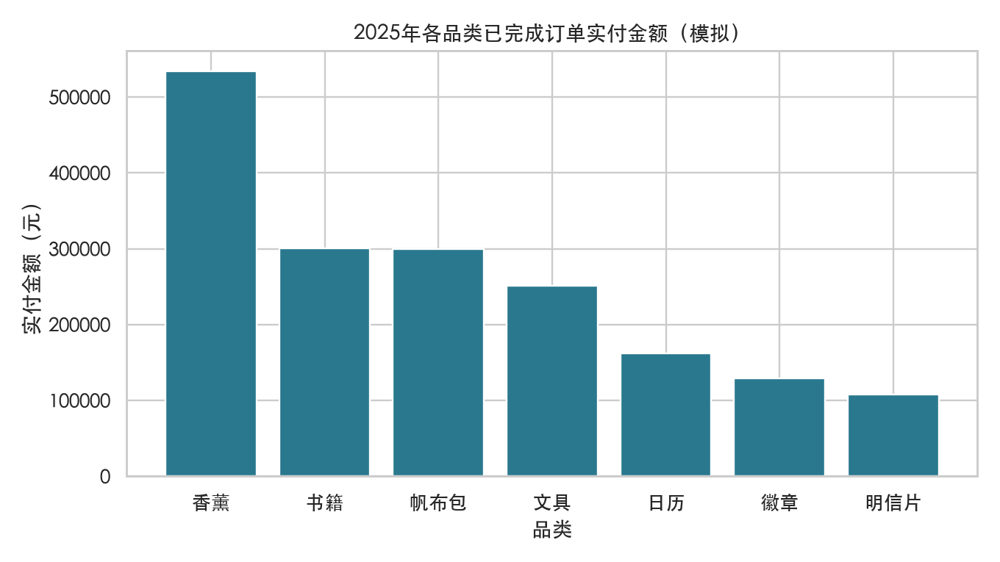

本课要掌握的结果
本课目标
- 把“比较类别、观察趋势、查看分布、探索关系”对应到图形。
- 认识 Figure 画布与 Axes 绘图区，自己修改标题和坐标轴。
- 用已完成订单画品类柱形图、按时间排序的月度折线图。
- 检查单位、范围、排序与来源，不靠华丽配色掩盖问题。
打开 4-1 练习本。本课使用 orders.csv 和 products.csv，它们是随包的规范模拟主表，不是未经处理的 orders_dirty.csv。练习先选“已完成”订单，金额定义为其 pay_amount 总和；这里不讨论成本、利润，也不把退款订单计入此口径。
1. 先问一句人话，再选图
“我想画一张图”还不是问题。把它改成“哪个品类的已完成订单实付金额最多？”就知道需要汇总并比较类别，而不是逐笔展示上万条订单。
| 你想回答的问题 | 首选图形 | 读者在看什么 |
|---|---|---|
| 哪个品类金额多？ | 柱形/条形图 | 不同类别的长度 |
| 每月金额怎样变化？ | 折线图 | 沿时间排列的走向 |
| 单笔金额集中在哪？ | 直方图 | 数值区间的频数 |
| 两个连续变量有关联吗？ | 散点图 | 成对观察的分布 |
柱形图的每根柱对应一个类别，直方图的每根柱对应一个数值区间；两者长得像，回答的问题却不同。饼图适合少数类别且确实构成同一个整体的粗略占比，类别很多或差距很小时通常不如排序条形图易读。不是每张图都要加三维效果；透视会让面积和长度更难比较。
组件只做选图练习，不执行代码。选错不说明“没美感”，通常只是尚未区分比较、趋势、分布和关系。
2. 画布与绘图区：像纸张与坐标框
matplotlib 是绘图库，pyplot 是常用入口，通常缩写为 plt。执行 fig, ax = plt.subplots() 得到两个对象：fig 是整张画布，可以保存文件；ax 是画布里的一块绘图区，可以添加柱、线和坐标轴文字。这里的 Axes 指“一个绘图区”，不是只有两根坐标轴。
import matplotlib.pyplot as plt
from dacheck import setup_chinese_font
setup_chinese_font()
fig, ax = plt.subplots(figsize=(7, 4))
ax.bar(["文具", "书籍", "帆布包"], [120, 90, 60])
ax.set_title("三个品类示意：已完成订单金额")
ax.set_xlabel("品类")
ax.set_ylabel("实付金额（元，示意值）")
ax.set_ylim(bottom=0)
fig.tight_layout()
plt.show()这一格是三条人工示意值，用来认识写法；后面的正式图来自文件。figsize 单位是英寸，不是像素。set_title() 设标题，set_xlabel()、set_ylabel() 写轴名。tight_layout() 尽量避免文字被挤出边缘。plt.show() 明确展示，不能只计算表格就声称已经画图。
每次重启内核，都先设置字体
setup_chinese_font() 会寻找已有中文字体。Windows 通常可用微软雅黑，但不要忽略“Glyph ... missing”警告。出现方框时先确认运行了字体设置格，再看 常见报错。本地保存图片也要实际打开看，字体配置成功返回不等于每个字符都已核对。
3. 真实从本模拟数据计算品类金额
import pandas as pd
orders = pd.read_csv("../data/shop/orders.csv")
products = pd.read_csv("../data/shop/products.csv")
completed = orders.loc[orders["status"].eq("已完成")].copy()
joined = completed.merge(products[["product_id", "category"]],
on="product_id", how="left", validate="many_to_one")
category_sales = (joined.groupby("category")["pay_amount"]
.sum().sort_values(ascending=False))
fig, ax = plt.subplots(figsize=(8, 4.5))
ax.bar(category_sales.index, category_sales.values, color="#2a788e")
ax.set(title="2025年各品类已完成订单实付金额（模拟）",
xlabel="品类", ylabel="实付金额（元）")
ax.set_ylim(bottom=0)
fig.tight_layout()
plt.show()先关联品类，再分组求和，然后降序排列。七个类别各有一根柱，不是一笔订单画一根柱。validate="many_to_one" 检查每个商品 ID 在主表里最多对应一行，防止重复关联让金额变大。画图前也要检查是否有未匹配品类，不能仅因为代码运行成功就认为口径正确。

柱形/条形图从零开始
柱长表达量的大小。如果把纵轴截到很高的位置，轻微差异会被画成很大差异。不要为“看起来更明显”而缩短柱图基线。可以标注数值或补充差额，但不改变长度的含义。折线图如需非零范围，也必须清楚标注，避免读者误会。
4. 时间趋势必须按日期排序
completed["order_time"] = pd.to_datetime(completed["order_time"])
completed["month"] = completed["order_time"].dt.to_period("M").dt.to_timestamp()
monthly = (completed.groupby("month", as_index=False)["pay_amount"]
.sum().sort_values("month"))
fig, ax = plt.subplots(figsize=(9, 4))
ax.plot(monthly["month"], monthly["pay_amount"], marker="o", color="#5b5fc7")
ax.set(title="2025年月度已完成订单实付金额（模拟）",
xlabel="月份", ylabel="实付金额（元）")
ax.set_ylim(bottom=0)
fig.autofmt_xdate()
fig.tight_layout()
plt.show()to_period("M") 取得所属月份，to_timestamp() 转成该月第一天，便于日期轴绘图。这个第一天只是月份标签，不表示金额都发生在月初。按月份排序，不按金额大小排序；否则线段连接的是“大小排名”而非时间趋势。
折线连接相邻观察，容易使读者认为过程连续。某个月没有数据时，先分清“真的没有订单”和“没有采集到数据”，不能直接填零或跨缺口连接后说增长稳定。波峰出现的月份也不证明促销有效，归因需要活动记录、对照和其他证据。
5. 图画出来之后，读一句完整的话
不要只说“文具第一”。更完整的描述要写对象、时间、指标与限制，例如：“在本模拟数据的 2025 年已完成订单口径下，品类金额排名如图；金额不代表利润，主表关联和状态筛选已完成。”具体最大品类应从 category_sales.index[0] 读出，不靠记忆写死。
颜色少而一致通常更好。给同一指标在不同图里使用相同颜色；只突出需要关注的一项，不让每根柱都像警报。深浅也不该暗示不存在的高低风险。网格线可以辅助读数，但要淡，不盖住主要图形。
6. 四个练习
练习 1：品类汇总
从本课的 joined 表计算品类实付金额并从高到低排序。检查汇总金额是否等于已完成订单总金额。
提示与答案
joined.groupby("category")["pay_amount"].sum().sort_values(ascending=False)。再比较 .sum() 与 completed["pay_amount"].sum()；出现差额先查关联和缺失分组。
练习 2：月度表
创建 month 和 pay_amount 两列的月度结果，月份保持日期类型且升序。
参考答案
按上文先解析日期、转换月份，再 groupby("month", as_index=False)["pay_amount"].sum().sort_values("month")。不要按文本“1月、10月、2月”排序。
练习 3：交付可读的柱形图
创建 Axes，柱子使用已排序的 category_sales，标题写“品类实付金额”，横轴“品类”，纵轴“实付金额（元）”，基线从 0 开始。
参考答案
fig, answer_ax = plt.subplots() 后 answer_ax.bar(...)、answer_ax.set(...)、answer_ax.set_ylim(bottom=0)，最后 plt.show()。检查会核对数据和轴标签，不比较像素或强迫使用某个颜色。
练习 4：一句话选图
老板问“各月金额是否持续增长”，你选什么图？给出排序依据。
参考答案
选择“折线图”，按真实月份升序，而不是按金额高低。图只描述趋势，不能单凭上升判断某措施有效。
下列哪种做法会破坏月度趋势含义？
折线的相邻位置必须有时间意义，按金额排序连线只是在画排名。
7. 常见问题与验收
| 问题 | 处理方法 |
|---|---|
ModuleNotFoundError: matplotlib |
确认内核是课程环境，回环境体检，不在 base 乱装 |
| 图中文字方框 | 先运行 setup_chinese_font()，再检查可用字体和缺字警告 |
KeyError: category |
品类来自商品主表，先关联，不在订单主表硬找 |
| 柱子数量特别多 | 先汇总再画，不要把逐笔记录当类别统计 |
| 保存图缺了标题 | 在 plt.show() 前用 fig.savefig(...)，实际打开验证 |
求职加分
求职作品最需要的是一张“问题与口径清楚”的图。你可以展示先筛选、关联、汇总、验证，再绘图的流程；不要把模拟金额写成真实公司业绩。面试时说明为什么柱图从零开始、为什么折线按日期排序，比说“会画漂亮图”更具体。
本课验收